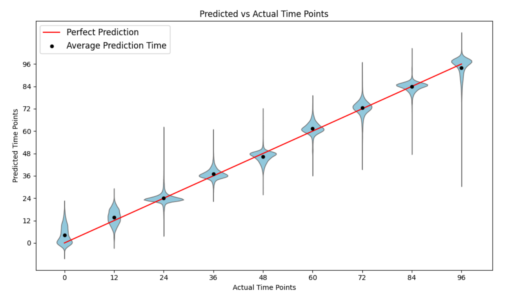
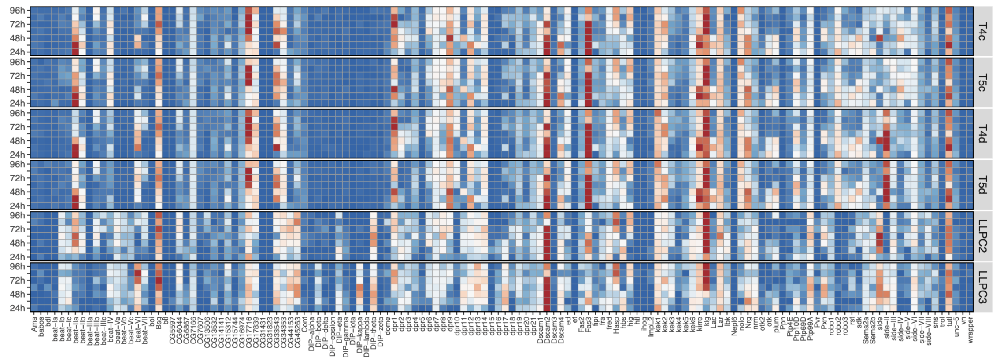
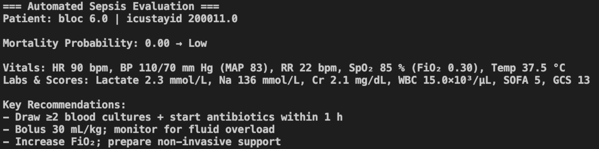

Bioinformatician @ Kurmangaliyev Lab
BS in Biology & Neuroscience, MS in Computer Science
Brandeis University · Graduating Winter 2025
Bioinformatician Kurmangaliyev and Hong, Brandeis University, August 2023 – Present
- Investigated the molecular mechanisms behind brain wiring and connectivity in the developing Drosophila brain
- Prepared and processed 10x single cell sequencing libraries
- Designed machine learning model that predicts developmental times of Drosophila brain
- Developed and maintained a Shiny web app for visualizing the developing Drosophila visual system single-cell dataset
Research Assistant Nelson Lab, Brandeis University, September 2021 – May 2023
- Investigated the role of core circadian gene Clock and Npas2 in regulating homeostatic plasticity in the mammalian neocortex
- Performed calcium imaging using spinning-disk confocal microscope
- Wrote image analysis scripts in MATLAB
Research Assistant Rosbash Lab, Brandeis University, September 2020 – August 2021
- Investigated the circadian impact of the expression of Parkinson’s related proteins Parkin and hSNCA in clock neurons
- Programmed Raspberry Pi for sleep phenotype monitoring
- Created CRISPR–Cas9 transgenic construct using Gibson Assembly
Single-cell Development Time Deep Learning Model — October 2023 – Present

Domain adversarial neural network (DANN) model trained to predict time points of single-cell RNA-seq samples in the developing Drosophila brain.
Written in Python using PyTorch.
Shiny Server Hosting Single-cell Interactive Interface — August 2023 – Present

Embedded interactive feature on the Kurmangaliyev lab website for exploring single-cell sequencing data.
Hosted via AWS EC2 running Shiny Server in R.
Sepsis-AI-Agent — January 2025 – May 2025

Developed an OpenManus-based AI agent that predicts 90-day sepsis mortality based on clinical data.
Interacts via natural language and makes guidelines-informed treatment recommendations for clinicians.
Written in Python.
Local LLM — July 2024 – Present
A JAX/Flax-optimized personal LLM running a fine-tuned Qwen 14B model on a local RTX GPU.
Implements efficient inference pipelines and GPU memory management.
Developed in Python.
Teamate Tea Catalog React Native App
Mobile app for tea enthusiasts to catalog and share entries.
Features photo capture, unit selection (bag, box, gram), glossary search, and offline storage.
Developed in TypeScript with React Native and AsyncStorage.